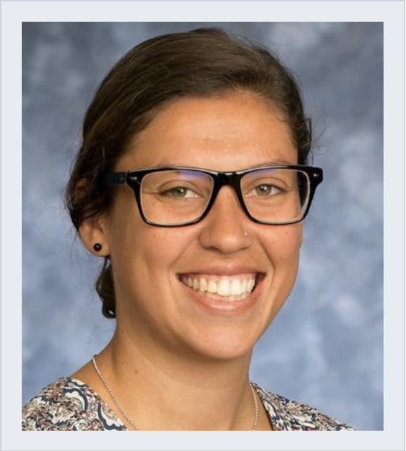

Physician Assistant & Aspiring Software Developer
Having spent my youth on the soccer field, I developed a strong sense of teamwork, discipline, and endurance early on. That drive led me into healthcare, where I established a rewarding career as a Physician Assistant. Caring for patients taught me critical problem-solving under pressure and attention to detail—skills that I carry into every aspect of my life.
My transition into technology began when I got inspired by my brother to explore computer coding. What started as curiosity quickly turned into a genuine passion; building software from scratch and solving logical puzzles has been an incredibly fun and empowering experience as a first-time coder.
When I am not studying or working, you will find me outdoors enjoying nature with my wife and our dogs. My ultimate dream is to bridge my passion for tech and community impact by opening a dog rescue, using code to build and run the entire operational backbone of the business myself.
July 2026 – Present
June 2022 – June 2026
December 2020 – May 2022
February 2017 – March 2018
July 2017 – May 2018
HyperionDev / Johns Hopkins University | 2026
Focus on Python programming, modern web technologies, software architecture, and full-stack development foundations.
UCSF Fresno | Dec 2020 – May 2022
University of California, Davis - Betty Irene School of Nursing | June 2018 – Sept 2020 (GPA: 3.86)
University of Portland, Portland, OR | Graduated May 2016 (GPA: 3.67)
Physical Exams, History Taking, SOAP Notes, XR Interpretation, Venipuncture, IV Start, Suturing & Splinting, I&D, Airway Management, Paracentesis, Fracture Reduction, Arthrocentesis
Ultrasound, Cardiac Doppler, Slit Lamp, Echocardiogram, Casting, Arterial & Central Line Placement, Intubation
English (Native), Spanish (Working Proficiency)